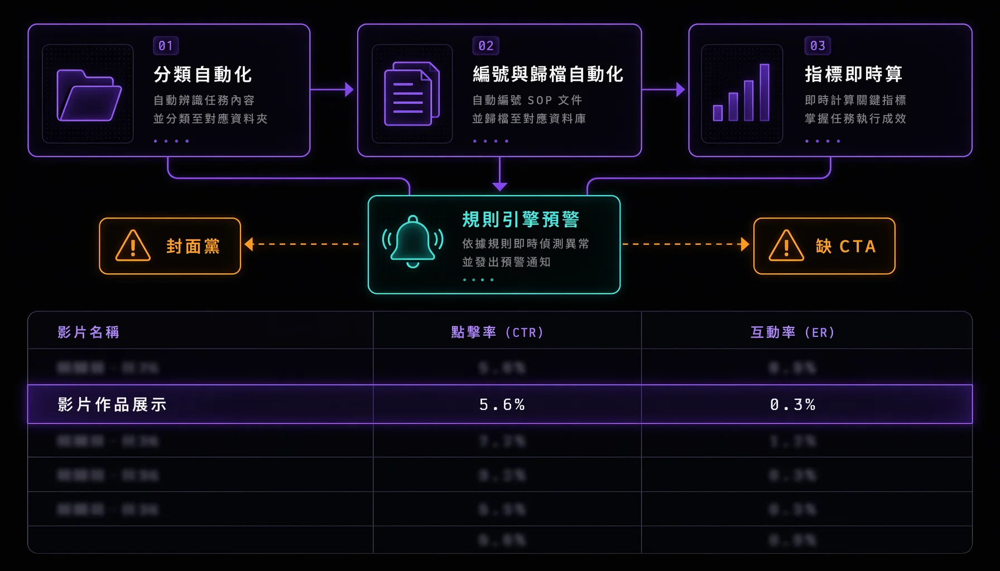

影視製作公司實習任內負責建立對內運作流程與小助理 SOP。從「大改 vs 小修」工作分類定義、影片排程命名、月度行政規範到開箱影片 VOOM 數據分析框架，整理成可交接的書面文件。這篇文章探討如何將這套 SOP 的每一條轉化為 APP 的功能規格。把它做成系統，架構會長怎樣、哪裡能優化。

# 大改 vs 小修：工作分類定義
為了避免因修改範圍模糊而導致跨部門協調成本增加，老闆同意將腳本修改拆分為兩類，並訂出明確判斷依據：
| 面向 | 小修 | 大改 |
|---|---|---|
| 範圍 | 特定場景、對白、動作 | 整體結構、主題或重要場景 |
| 目的 | 語氣 / 描述 / 細節優化 | 重寫情節、調整角色動機、改變結局 |
| 影響 | 不動分鏡、拍攝計畫、後製 | 可能要重排分鏡、拍攝、預算 |
| 協調層 | 編劇 / 編輯團隊現場快速處理 | 製片或客戶批准 + 跨部門重新協調 |
| 判斷依據 | 局部優化、整體影響有限 | 會動到分鏡 / 場景設計 / 拍攝計畫 |
# 小助理守則：排程與行政
- 影片歸檔 — 剪完的影片依客戶或創作者名稱，存到對應雲端資料夾
- 排程編號 — 「月-次數」格式（例：3-1 = 3 月第一次拍攝）
- 月度簽到 — 月初印簽到表、貼門口、舊表歸檔；每天檢查簽到狀況；人事變動時更新名單
- 發票歸檔 — 雙月月底處理
- 分組對接 — 企劃編導、拍攝剪輯及後續助理三個職能，各自負責對接不同案件
# 開箱影片 VOOM 數據分析框架
負責的開箱類影片發佈於 VOOM 平台。為了讓老闆能用同一套指標跨支影片比較，整理了一套五層轉換率公式：
| 指標 | 公式 | 用途 |
|---|---|---|
| 點擊率 (CTR) | 點擊 ÷ 曝光 | 封面是否吸引人 |
| 3 秒觀看率 | 3 秒觀看 ÷ 曝光 | 開頭是否留得住 |
| 1 分鐘觀看率 | 1 分鐘觀看 ÷ 曝光 | 深度觀眾比例 |
| 3 秒到 1 分鐘留存率 | 1 分鐘 ÷ 3 秒觀看 | 滑過 → 認真觀看的轉換 |
| 互動率 | (反應 + 留言) ÷ 曝光 | 觸及到互動的轉換 |
# 異常識別規則
有了五層公式後，把常見的「異常組合 → 可能原因」整理成判斷規則：
- 點擊率高但觀看低 — 封面黨（封面內容與影片主題不符）
- 觀看高但互動低 — 影片品質可以但缺 CTA（call-to-action）
- 3 秒觀看多但 1 分鐘觀看少 — 開頭不吸引、留不住觀眾
# 工作量級（2025.06-07 開箱系列）
兩個月內發佈 13 支開箱影片，覆蓋生活用品、廚房用品、彩妝、健身工具等品類。其中單支峰值表現：
67K
單支峰值曝光
37K
單支峰值 3 秒觀看
301
單支峰值互動
# 如果現在做成一個 APP：架構
上面四塊 SOP 對應到系統就是四個模組，共用一組資料表。三個職能分別是系統裡三種角色，各自看到自己該做的事。
功能模組
工單模組
腳本修改開單，送出時依判斷依據自動分「小修 / 大改」。大改自動觸發跨部門審批。
排程模組
拍攝日曆，編號用「月-次數」自動生。影片剪完依客戶名自動歸到對應雲端資料夾。
數據模組
接 VOOM 數據，自動套五層轉換率公式，算出 CTR、留存、互動率。
預警模組
異常識別規則做成規則引擎，數據一進來就自動比對、標出封面黨或缺 CTA 的影片。
核心資料表
projects 案件
videos 影片
schedules 排程
staff 人員
metrics 數據
alerts 預警
# 會怎麼優化
優化的方向都是同一件事：SOP 裡本來要人記在腦子裡、每次手動判斷的規則，搬進系統讓它自動跑。
- 分類自動化 — 大改 / 小修的判斷依據寫成表單邏輯，開單時系統自己判類、自己決定要不要跨部門審批。人不用每次重新想這條改動算大還算小。
- 編號與歸檔自動化 — 排程編號、雲端歸檔路徑照規則自動生成。命名若依賴人工輸入容易出現錯誤，交由系統生成則能確保一致性。
- 指標即時算 — 五層轉換率公式寫進系統，數據一進來就算好，跨影片用同一把尺比較。省下每支手動套 Excel 的工。
- 規則引擎預警 — 異常組合對應原因做成規則，數據進來自動標紅並附上可能原因。判斷這種有明確條件的事交給規則引擎，人只看被標出來的那幾支。
- 簽到電子化 — 月度簽到由原本的印表格貼門口，改為掃碼或按鈕打卡，簽到狀態即時更新至 staff 表，人事變動時可直接修改名單。